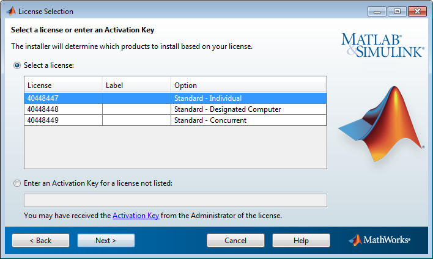

MathWorks® 계정에 연결된 라이선스 목록에서 라이선스를 선택하고 다음을 클릭합니다. 이 목록에는 라이선스에 관한 다음 정보가 들어 있습니다.
MathWorks 계정과 연결되지 않은 라이선스로 제품을 활성화하려는 경우 목록에 없는 라이선스의 활성화 키 입력 옵션을 선택하고 활성화 키를 입력한 후 다음을 클릭합니다. 활성화 키는 라이선스를 식별하는 고유한 코드입니다. 이 키를 사용하여 라이선스를 활성화하거나 라이선스를 자신의 계정에 연결할 수 있습니다. 활성화 키는 라이선스 관리자에게 문의하십시오.
참고: 활성화 키에 대시 또는 공백을 입력하는 것은 옵션입니다. |
MATLAB® 학생용 소프트웨어를 활성화하는 경우에는 제품 패키지에 활성화 키가 포함되어 있습니다.
